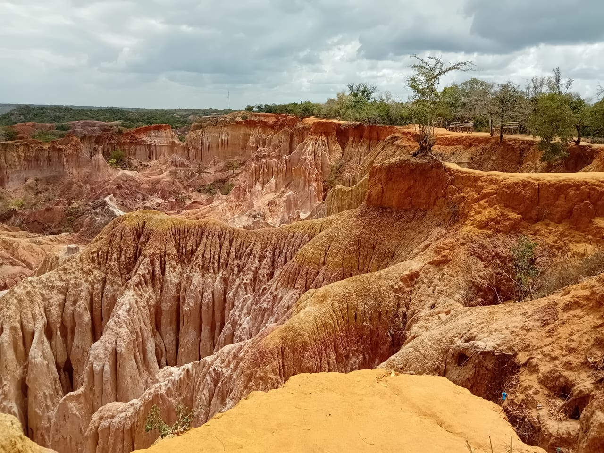

Featured Destination: Marafa Hell's Kitchen
Venture inland witness the surreal beauty of Marafa Hell's Kitchen, a natural wonder sculped over centuries by wind and rain. The place holds a significance for both the local community and visitors from around the world. A story of a wealthy family swallowed up by the ground is told of the place after a famine that lasted for years hit the area. It's said that the locals had to walk for days to get food and water for their animals. While everyone suffered to meet their needs, the wealthy family thrived and didn't bother to share with those that were in need. One night while everyone was a sleep, a loud bang was heard from the homestead of the wealthy family, and since they didn't bother about the needs of the other locals, they also didn't come out to see what was happening. The next morning when the locals woke up, they found that the entire homestead had sunk and thats how the place came to existence. The vibrant colors and intricate patterns, is believed to represent the cattle that sunk that night.
- Vasco Da Gama Pillar
Stands as one of Kenya's oldest European monuments. It was erected by the famous Portuguese explorer Vasco Da Gama. It served as a key stopover for early explorers sailing to India.